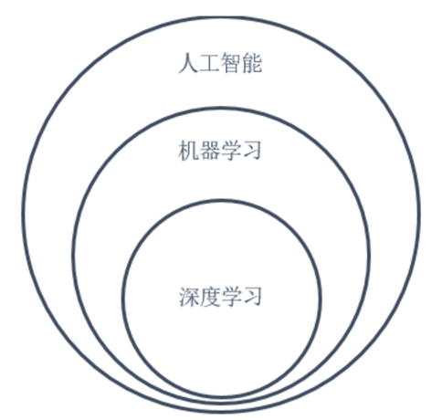

人工智能、机器学习、深度学习、自然语言处理
一、定义
深度学习解决的核心问题之一就是自动地将简单的特征组合成更加复杂的特征，并使用这些组合特征解决问题。深度学习是机器学习的一个分支，它除了可以学习特征和任务之间的关联以外，还能自动从简单特征中提取更加复杂的特征。
二、相互关系
总的来说，人工智能、机器学习和深度学习是非常相关的几个领域。图3总结了它们之间的关系。人工智能是一类非常广泛的问题，机器学习是解决这类问题的一个重要手段，深度学习则是机器学习的一个分支。在很多人工智能问题上，深度学习的方法突破了传统机器学习方法的瓶颈，推动了人工智能领域的发展。

NLP和他们是什么关系?
- 机器学习的算法分为：
- 监督式学习：教计算机如何计算
- 非监督式学习：程序自己学习
- 还有其他的： reinforcement learning强化学系, recommender systems推荐系统